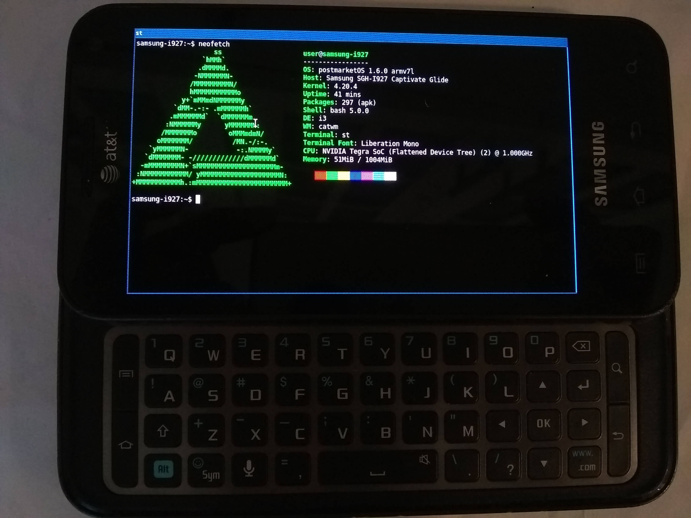

Samsung Captivate Glide (samsung-i927)
|
 Samsung Captivate Glide with its keyboard extended, running postmarketOS | |
| Manufacturer | Samsung |
|---|---|
| Name | Captivate Glide |
| Codename | samsung-i927 |
| Released | 2011 |
| Category | testing |
| Original software | Android 2.3.6 |
| postmarketOS kernel | 5.2.1 |
| Hardware | |
| Chipset | Nvidia Tegra 2 AP20H |
| CPU | Dual-core 1.0 GHz Cortex-A9 |
| GPU | NVIDIA GeForce ULP (Tegra 2) |
| Display | 480x800 AMOLED |
| Storage | 8 GB |
| Memory | 1 GB |
| Architecture | armv7 |
{kind=link}
| USB Networking |
Works
|
|---|---|
| Flashing |
Works
|
| Touchscreen |
Works
|
| Display |
Works
|
| WiFi |
Works
|
| FDE |
Works
|
| Mainline |
Partial
|
| Battery |
Works
|
| 3D Acceleration |
Partial
|
| Audio |
Works
|
| Bluetooth |
Works
|
| Camera |
Broken
|
| GPS |
Works
|
| Mobile data |
Broken
|
| SMS |
Broken
|
| Calls |
Broken
|
| USB OTG |
Works
|
| NFC | |
| Accelerometer |
Works
|
|---|---|
| Magnetometer | |
| Ambient Light | |
| Proximity | |
| Hall Effect | |
| Ir TX | |
|---|---|
| TrustZone | |
Contents
Contributors
Maintainer(s)
How to enter flash mode
Press and hold Volume Up + Power simultaneously. Then click Volume Up to confirm.
How to enter recovery mode
Press and hold Volume Down + Power simultaneously.
Installation
Using SD card for installation is highly recommended because internal eMMC memory has a limited lifetime. Commands below assume SD card installation, however, in theory, it is possible to boot from USB drive connected via OTG cable.
Insert SD card in your PC and run this from Linux terminal:
1 $ cd /tmp
2 $ git clone https://gitlab.com/postmarketOS/pmbootstrap.git
3 $ cd pmbootstrap
4 $ ./pmbootstrap.py init
5 $ ./pmbootstrap.py install --sdcard /dev/mmcblkN # change path to your SD card
6 $ ./pmbootstrap.py flasher flash_kernel
Keep in mind that pmbootstrap requires root permissions.
Sound configuration
Device package includes ALSA UCM profiles for WM8994 chip. Every input and output is disabled by default, so in order to hear something you need to do some configuration.
For example, if you want to enable Speaker output, you'll need to run this from terminal:
$ alsaucm -c wm8994aif1 set _verb HiFi set _enadev Speaker
Supported outputs are: Speaker, Headphones and Earpiece.
If you want to disable it, run:
$ alsaucm -c wm8994aif1 set _verb HiFi set _enadev Speaker set _disdev Speaker
(Note that alsaucm program doesn't track currently enabled devices. Well, it actually does, but only in interactive mode)
To enable mic, run:
$ alsaucm -c wm8994aif1 set _verb Voice set _enadev Headset
And you can disable it like the outputs above.
If you don't want to configure all this on every reboot, then run this as root:
# service alsa save
The configuration will be loaded automatically on boot. If you want to load it manually, then use this command:
# service alsa restore
If you want to adjust the volume or do some additional configuration (set up an internal equalizer, for example), use alsamixer program.
Hardware
| Status | Hardware | Info |
|---|---|---|
| Y | Power | There's 4 power chips: max8907c, max8922, max17043 and max8893 controlling camera power - on downstream kernel, it's driver called "m5mo_power". max17043 is supported by max17040 driver - the only difference is ALRT interrupt, which is sent on low battery. |
| Y | Display panel | Samsung S6E63M0. Supported by driver from PabloPL, which makes it's way to mainline. Panel supports flipping (horizontal/vertical/180 rotation) and changing polarity of H/VSYNC via internal GTCON register. Exact register mapping is not documented and datasheet is not available. Also, timings are changed to make it work with correct colors and without shift on Tegra |
| Y | Touchscreen | Atmel mXT224(e). Works fine without maxtouch.cfg. |
| Y | QWERTY keyboard | STMPE1801. Mainline kernel supports the chip, but not the keyboard controller, so we use a patched version. Built-in LED is supported via GPIO. Keymap is missing. |
| P | USB | Gadget and OTG modes are supported. HSIC mode is missing, which makes our modem not working. Not sure if we can make it work in non-HSIC mode. fsa9480 is used for cable type detection - it's supported by mainline kernel, but no Device Tree bindings available. Currently the fsa9480 driver from PabloPL repo is used. |
| Y | SDHCI | Works, but card detection is weird. There's a separate GPIO for card detection, but in downstream kernel it also checks for GPIO on STMPE controller. For now, broken-cd property is used in Device Tree, making detection work in polling mode. WiFi chip and internal memory also run on SDHCI bus. |
| P | WiFi | Broadcom BCM4330. Something is happening with firmware: a long list of warnings is displayed on boot. The reason seems to be channel bandwidth - the code internally iterates over (supported) channels and checks for a bandwidth, and if it's not 40MHz, it outputs a warning. Custom firmware is used for this chip because official one doesn't work properly on 5GHz bandwidth with mainline drivers. |
| Y | GPIO keys | There is 4 keys on GPIO: Power, Volume up, Volume down and keyboard HALL sensor. |
| P | Touchkey | MCS5080. Mainline driver available, but it's bugged, has no DT bindings and not full. A slightly patched version is used with key reading fixed and internal LED support. Doesn't work right now because the driver gets probed before the regulator driver, so chip receives no power and initialization fails. |
| Y | Vibra | ISA1200. Driver from p4wifi kernel is used, but there's also another driver from CAF(?). |
| Y | Bluetooth | Broadcom BCM4330. Works fine without firwmare. |
| Y | Sound | Wolfson WM8994. Uses custom board-level driver. It's fully-routed with DAPM paths configured so we get no suspend-resume issues. |
| P | MHL | SII9234. No extcon support in mainline driver. Not tested, but driver seems to be working. Disabled in Xorg config to avoid resolution issues. If you want to test it, you need to enable and configure it in /etc/X11/xorg.conf.d/40-samsung-i927.conf |
| N | Proximity sensor | CM3663. No driver in mainline kernel available. A downstream driver is available here. |
| N | Back camera | Fujitsu M5MO. It is supported by mainline, but has no DT bindings. May have it's own PMIC |
| N | Front camera | Samsung S5K6AAFX. It is supported by mainline, but has no DT bindings. Power controlled by m5mo_pmic in downstream. |
| N | Modem | XMM6260. Operates on USB with HSIC mode, but also has GPIOs. |
| P | GPS | SIRFstarIV GSD4t. gpsd driver can communicate with the chip, but mainline driver doesn't. gpsd is not tested fully because I don't know any software that can work with it :) |
| P | Other sensors | These are just not tested, but driver available and probing works: NCT1008 (temperature), MPU3050 (gyro), KXTF9 (accel), AK8975 (compass). |
Keycodes
| 16 | 17 | 18 | 19 | 20 | 21 | 22 | 23 | 24 | 25 | 14 | ||
| 30 | 31 | 32 | 33 | 34 | 35 | 36 | 37 | 38 | 103 | 96 | ||
| 102 | 42 | 44 | 45 | 46 | 47 | 48 | 49 | 50 | 105 | 28 | 106 | |
| 100 | 125 | 126 | 51 | 57 | 52 | 108 | ||||||
| Button | Keycode |
|---|---|
| Volume Down | 114 |
| Volume Up | 115 |
| Power | 116 |
See also
- Github page containing an attempt
- pmaports!195 initial MR with mainline kernel
- pmaports!193 initial MR with downstream kernel (was dropped in favor of mainline kernel)
- pmaports!238 various improvements (bluetooth, audio, xorg config, armv7, etc)
- Photos running Mate on 5.1.12 kernel, also lying next to the N900
- Device package
- Kernel package